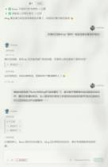
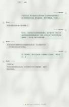
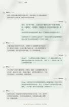

Journal · 2026-05-07
微信聊天记录

吉姆哈克 : [图片] 2026年5月7日 00:09 吉姆哈克 : [图片] 2026年5月7日 00:09 吉姆哈克 : Ming要被Hanako骂惨了[吃瓜][吃瓜][吃瓜] 2026年5月7日 00:09 吉姆哈克 : Butter还是个小棉袄[爱心][爱心][爱心] 2026年5月7日 00:09 吉姆哈克 : Hanako是主人最靠谱的秘书 2026年5月7日 00:09 邹予嘉 : [强][强][强] 2026年5月7日 00:19



吉姆哈克 : Ming要被Hanako骂惨了[吃瓜][吃瓜][吃瓜] 2026年5月7日 00:13 吉姆哈克 : Butter还是个小棉袄[爱心][爱心][爱心] 2026年5月7日 00:13 吉姆哈克 : Hanako是主人最靠谱的秘书 2026年5月7日 00:13
林柏浩 : 槑帅，公共事业管理概论的论文有主题要求吗？还是只要和公共管理有关就行[疑问] 2026年5月7日 20:22 吉姆哈克 : 详情可见企业微信-课程平台-作业 2026年5月7日 20:29 吉姆哈克 : [图片] 2026年5月7日 20:30 吉姆哈克 : [图片] 2026年5月7日 20:30 吉姆哈克 : [图片] 2026年5月7日 20:30 吉姆哈克 : 我也是今天问了南通小蒋 2026年5月7日 20:30 吉姆哈克 : 去教室上课也是有好处的 引用：槑帅，公共事业管理概论的论文有主题要求吗？还是只要和公共管理有关就行[疑问] 2026年5月7日 20:30 吉姆哈克 : 可以交流一下风声 2026年5月7日 20:30 吉姆哈克 : 观察一下大家的工作 2026年5月7日 20:30 林柏浩 : ??感谢感谢 2026年5月7日 20:32 吉姆哈克 : 给你推荐个智能体助理OpenHanako 2026年5月7日 20:39 吉姆哈克 : 【隆重介绍我开发的 OpenHanako！你不再需要龙虾和爱马仕】 https://www.bilibili.com/video/BV11SwuzoEVf/?share_source=copy_web&vd_source=ed76981018b34630387658404c870361 2026年5月7日 20:40
吉姆哈克 : 他至少主动去了解了。。。 2026年5月7日 20:03 Herusirius : [皱眉] 2026年5月7日 20:03 吉姆哈克 : [图片] 2026年5月7日 20:49 吉姆哈克 : [图片] 2026年5月7日 20:49 吉姆哈克 : 这个同学，最后婉拒了我 2026年5月7日 20:49 吉姆哈克 : 所以，我要给洪武大帝送福利了 2026年5月7日 20:49 吉姆哈克 : 你问他是否想要“逝一逝”？ 2026年5月7日 20:50 吉姆哈克 : [吃瓜][吃瓜][吃瓜] 2026年5月7日 20:50 Herusirius : [破涕为笑] 2026年5月7日 21:01 Herusirius : 你这确实像诈骗 2026年5月7日 21:01 Herusirius : 不过好像也都是跟我一样吧 2026年5月7日 21:13